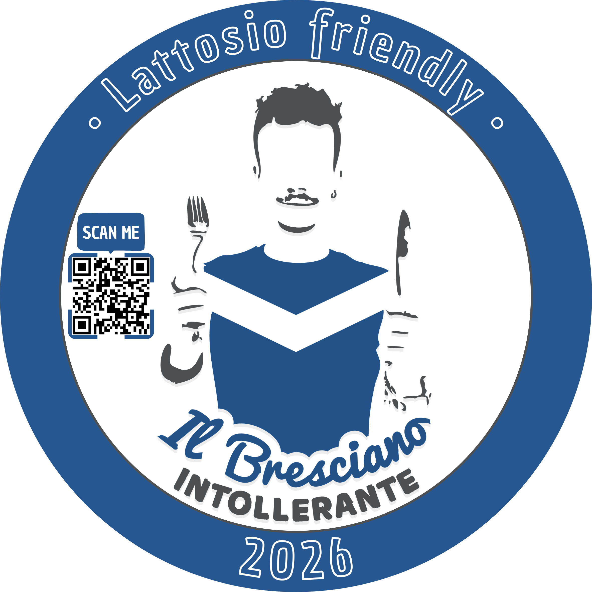

Se sei intollerante al lattosio e ti trovi in provincia di Brescia allora sei capitato nella pagina giusta.
"Il bresciano intollerante non deve rispecchiare una persona ma un gruppo di persone."

*** Il Bresciano Intollerante non certifica, non controlla e non garantisce l’assenza di lattosio nei piatti. Ogni locale resta responsabile delle proprie preparazioni e ogni persona resta responsabile delle proprie scelte alimentari. Questo progetto nasce per favorire il dialogo, non per sostituirlo. Questo simbolo indica che il locale è attento e disponibile al dialogo sulle esigenze legate all’intolleranza al lattosio: 👉 Non è una certificazione 👉 Non è una garanzia medica 👉 Non sostituisce il dialogo con il personale del locale ***
Trovare un posto dove mangiare dovrebbe essere semplice, ma per chi è intollerante al lattosio spesso diventa una piccola missione: scegliere dove andare, controllare ogni piatto, temere di stare male… e desiderare solo di sentirsi “normale”.
Ho creato questo sticker con un obiettivo molto semplice: aiutare le persone.
Viviamo in un’epoca in cui, grazie soprattutto ai social, è facile trovare consigli su dove mangiare, ma quando si ha un’intolleranza al lattosio la domanda è sempre la stessa: quanto posso davvero fidarmi?
Questo sticker nasce per distinguere i locali che non si limitano a “promettere”, ma che si mostrano disponibili al dialogo, consapevoli dell’importanza di questa esigenza.
Non è una certificazione e non è una garanzia assoluta, ma un segnale di attenzione reale: qui puoi chiedere, parlare, confrontarti e sentirti ascoltato.
Questo simbolo vuole offrire un po’ più di tranquillità a chi, come me, ogni giorno deve fare attenzione a ciò che mangia.
Ti permette di cercare locali in tutta Brescia che offrono prodotti senza lattosio.
Fammi cercare qualche locale